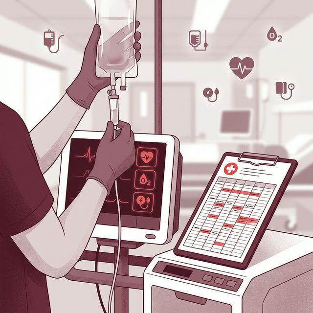

La Lesión Renal Aguda (LRA) es la disminución súbita de la función renal, ocurre en horas o días y puede ser reversible si se trata a tiempo.
PRINCIPALES CAUSAS
- Deshidratación
- Sepsis
- Choque
- Medicamentos nefrotóxicos
La Lesión Renal Aguda (LRA) es la disminución súbita de la función renal, ocurre en horas o días y puede ser reversible si se trata a tiempo.

Acuda al servicio de salud si presenta: